Visualizing Networks
Kelsey Andersen, Robin Choudhury
For this portion of the workshop, we will use the following packages:
Networks with igraph
Simple Networks
First, let’s create a simple adjacency matrix with three rows and three columns:
## [,1] [,2] [,3]
## [1,] 0 0 1
## [2,] 1 0 0
## [3,] 0 1 0Use the igraph function graph_from_adjacency_matrix() to create a network object from your graph, then use the plot() function to plot. Use edge.arrow.size to set the size of the arrows.
mat2 <- graph_from_adjacency_matrix(mat1)
plot(mat2, edge.arrow.size = 1) ## set the size of the arrows 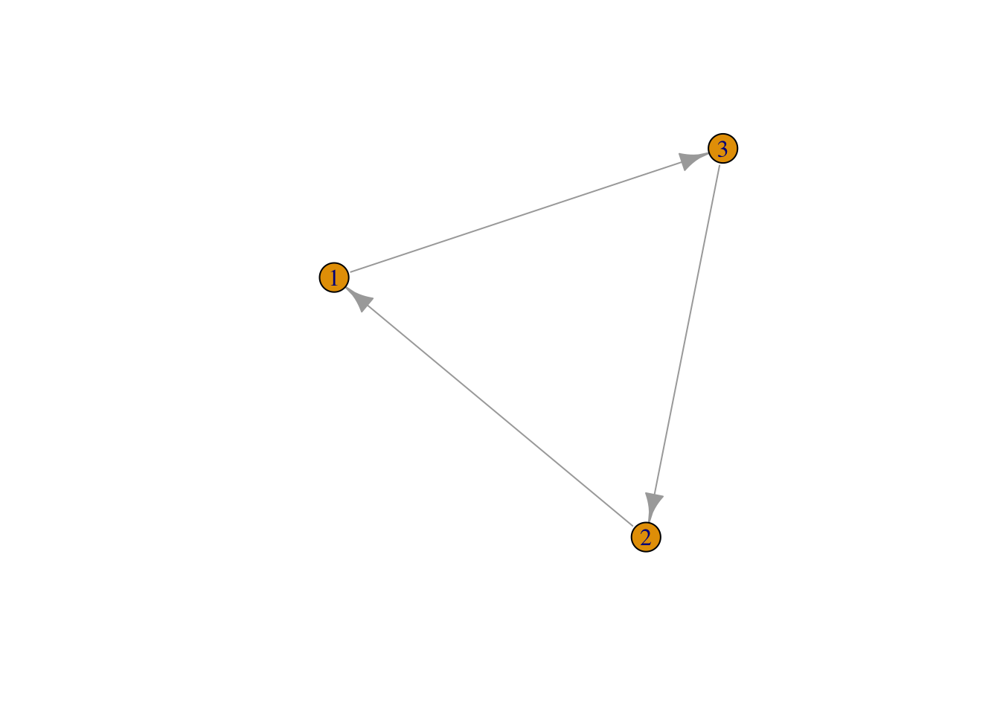
Alternatively, create the same network by telling igraph what links you would like and how many nodes you would like to establish. We also want to tell igraph if our network is directed (with arrows) or undirected.
mat3 <- graph(edges=c(1,3, 3,2, 2,1), n=3, directed=T ) # use graph function and list edges
plot(mat3, edge.arrow.size = 1)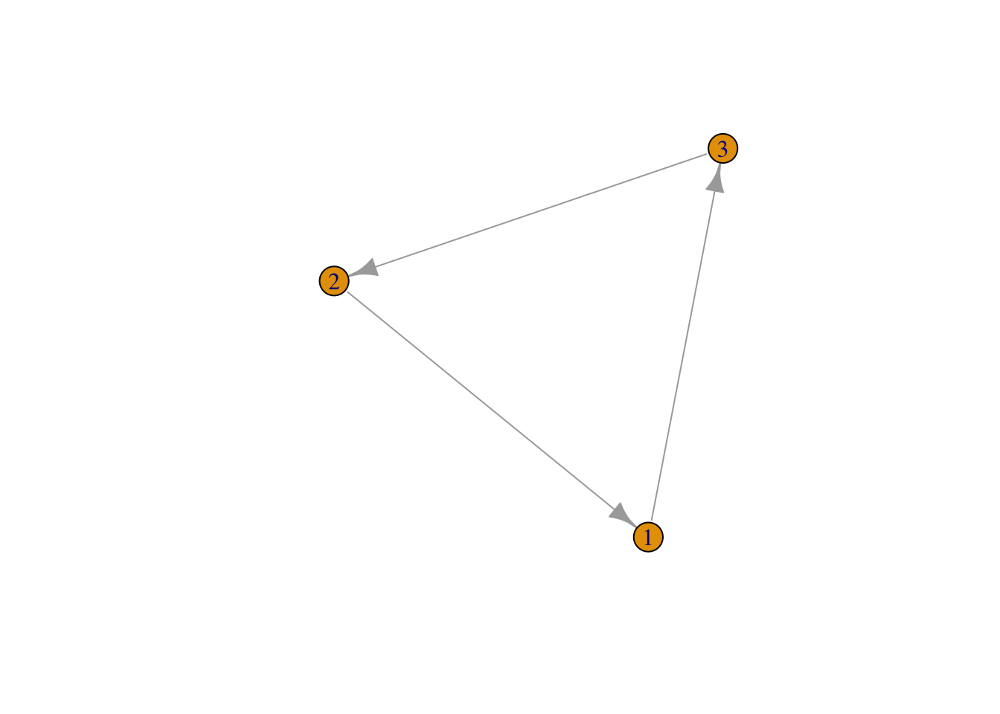 # Network Aestetics
Many parts of a network can be sized and colored to help communicate results more clearly.
Here, for example, we color the nodes and change the size and position of the labels using vertex.color = and vertex.label.dist =
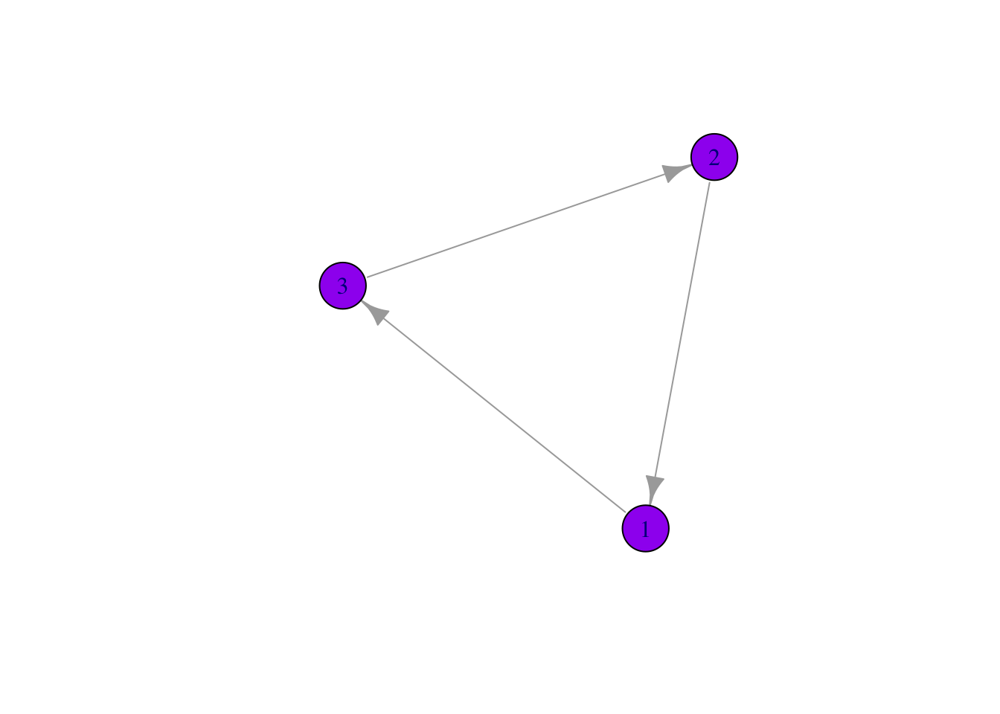
Labels
Here we use vertex.label.cex to make our labels slightly bigger, and we use vertex.label.dist to move the labels off the network. This can be useful, particularly when we have large networks.
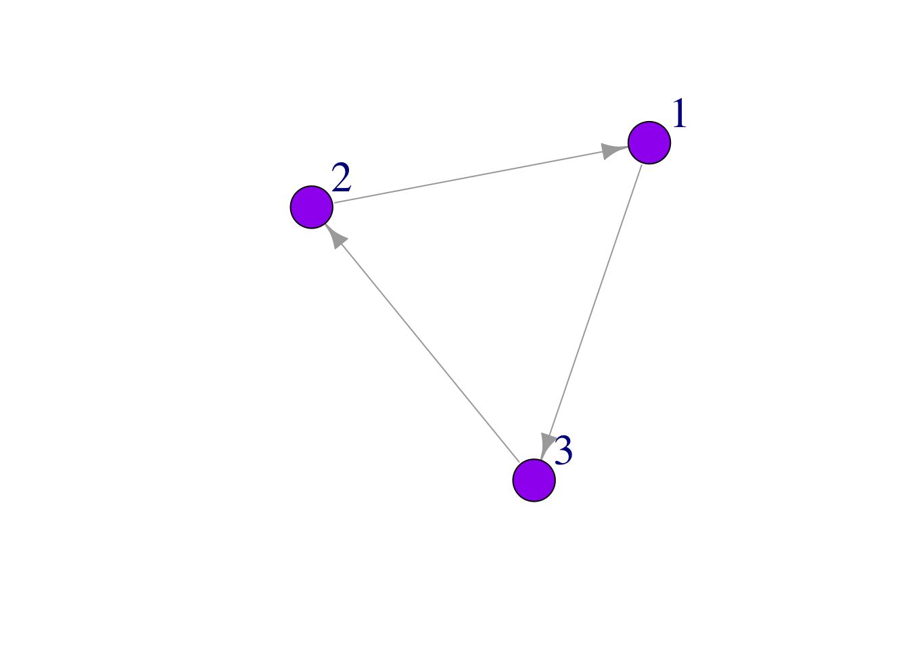
Curved edges
Sometimes it is useful to curve edges of our network:
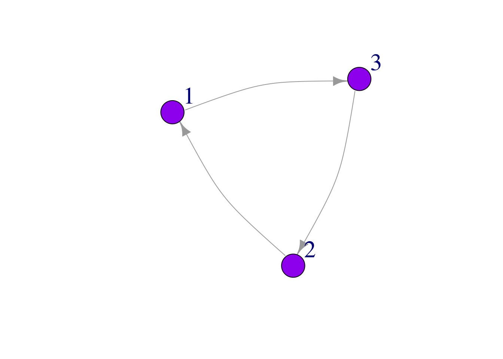
Colors
Here we color the node borders the same color as the nodes themselves, but this could be modified to a different color that gives additional information about the node:
plot(mat3,
edge.arrow.size = 1,
vertex.color = "purple",
vertex.frame.color="purple",
vertex.size = 25,
vertex.label.cex = 2,
vertex.label.dist = 3.5,
edge.curved = .2)
We can also change edge colors. This can be useful when edges mean different things.
plot(mat3,
edge.arrow.size = 1,
vertex.color = "purple",
vertex.frame.color="purple",
vertex.size = 25,
vertex.label.cex = 2,
vertex.label.dist = 3.5,
edge.curved = .2,
edge.color="purple")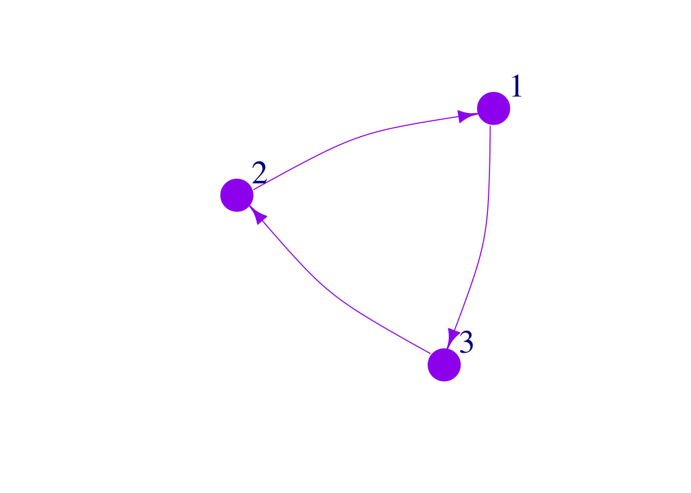
Other ways to change aesthetics
We can also adjust plot aesthetics by applying changes directly to the verticies V() or edges E() of our plots.
V(mat3)$color <- 'purple'
V(mat3)$size <- 25
E(mat3)$color <- 'purple'
E(mat3)$arrow.size <- 1
V(mat3)$frame.color <- 'purple'
plot(mat3)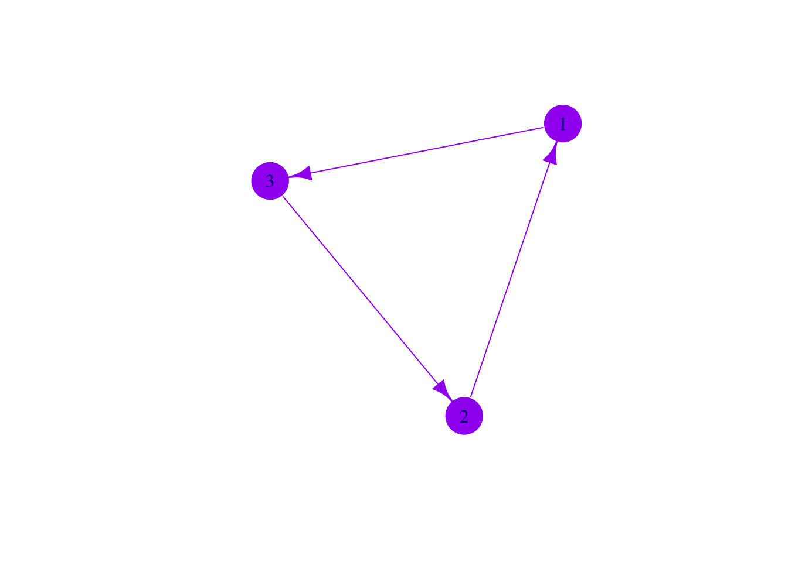
Network data types
Adjacency matrices vs node lists
You can read in your data directly as an adjacency matrix, but likely this is not the way that you have your data organized. Instead, it might be easier to have two files: a node file and an edge file.
In a node file, the first two columns are all of your from:to links. Column 1 is always from, Column 2 is always to (less important for undirected networks). The columns after that are your edge attributes (such as weight of link, volume, probability, name etc).
Here is an example of a simple node list, where all of the nodes are farmers and links are communication. We include attributes about the node like age, gender, and number of years farming.
Nodelist <- data.frame(
Names =c("Jim", "Carole", "Joe", "Michelle", "Jen", "Pete", "Paul", "Tim",
"Jess", "Mark", "Jill", "Cam", "Kate") ,
YearsFarming = c(8.5, 6.5, 4, 1, 3, 10, 5, 5, 5, 1, 1, 6, 6) ,
Age = c(27, 52, 49, 32, 65, 72, 42, 67, 48, 33, 67, 75, 39) ,
Gender = c("Male", "Female", "Male", "Female", "Female", "Male","Male","Male", "Female", "Male", "Female", "Male", "Female"))
Nodelist ## Names YearsFarming Age Gender
## 1 Jim 8.5 27 Male
## 2 Carole 6.5 52 Female
## 3 Joe 4.0 49 Male
## 4 Michelle 1.0 32 Female
## 5 Jen 3.0 65 Female
## 6 Pete 10.0 72 Male
## 7 Paul 5.0 42 Male
## 8 Tim 5.0 67 Male
## 9 Jess 5.0 48 Female
## 10 Mark 1.0 33 Male
## 11 Jill 1.0 67 Female
## 12 Cam 6.0 75 Male
## 13 Kate 6.0 39 Female
Now we can create an edgelist data frame- Who shared information in the 2019 growing season? How frequently?
igraph objects
Let’s make our farmer communication network!
## IGRAPH 7442d93 DN-- 13 11 --
## + attr: name (v/c), YearsFarming (v/n), Age (v/n), Gender (v/c), Times
## | (e/n)
## + edges from 7442d93 (vertex names):
## [1] Jim ->Carole Jim ->Jen Jim ->Pete Jill->Carole Kate->Joe
## [6] Pete->Carole Pete->Paul Jess->Mark Jim ->Cam Jim ->Mark
## [11] Pete->Tim## + 11/11 edges from 7442d93 (vertex names):
## [1] Jim ->Carole Jim ->Jen Jim ->Pete Jill->Carole Kate->Joe
## [6] Pete->Carole Pete->Paul Jess->Mark Jim ->Cam Jim ->Mark
## [11] Pete->Tim## + 13/13 vertices, named, from 7442d93:
## [1] Jim Carole Joe Michelle Jen Pete Paul Tim
## [9] Jess Mark Jill Cam KatePlot!
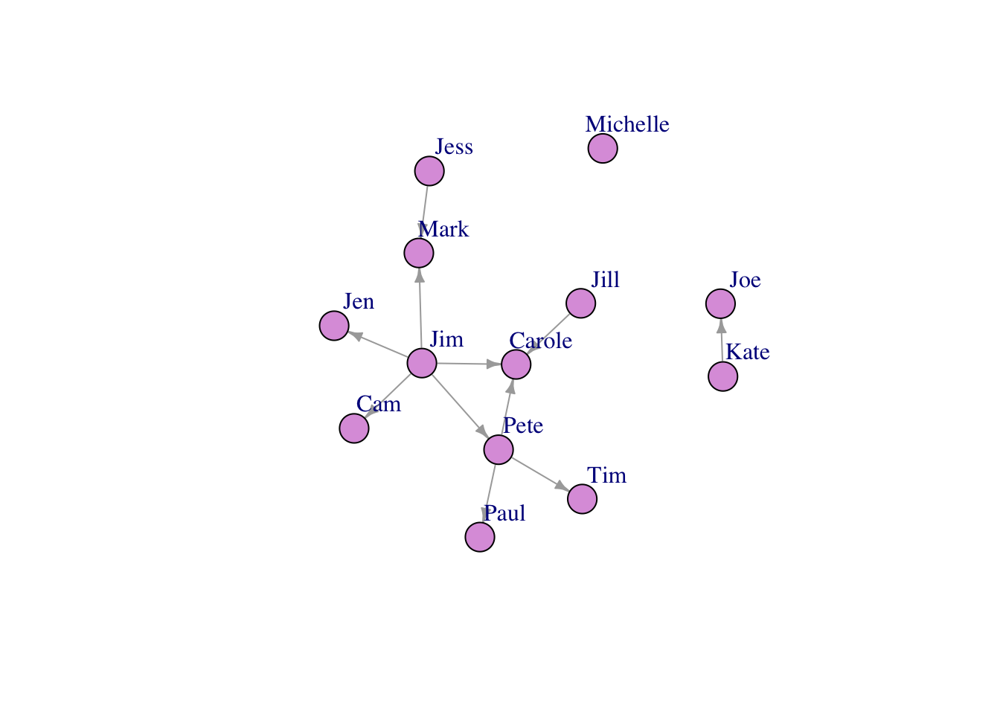
Node colors
Much more information about making beautiful networks in R using igraph can be found at Katya Ognyanova’s Site. But briefly:
Let’s color our nodes based on gender
V(FarmNetwork)$color <- ifelse(V(FarmNetwork)$Gender == "Male", "#4682B4", "#C83200")
V(FarmNetwork)$frame.color <- ifelse(V(FarmNetwork)$Gender == "Male", "#4682B4", "#C83200")
plot(FarmNetwork, edge.arrow.size = .5, vertex.label.dist = 2.5, edge.curved = .2)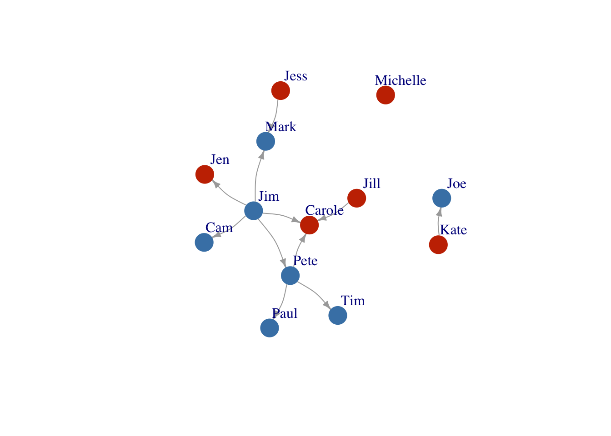 ## Layouts
You will notice that evertime that you run the above code, the layout changes. Here we will show you layout options, and how to “fix” a layout once you have chosen one that you like.
Layout1 <- layout_in_circle(FarmNetwork)
plot(FarmNetwork, edge.arrow.size = .5, vertex.label.dist = 2.5, layout = Layout1)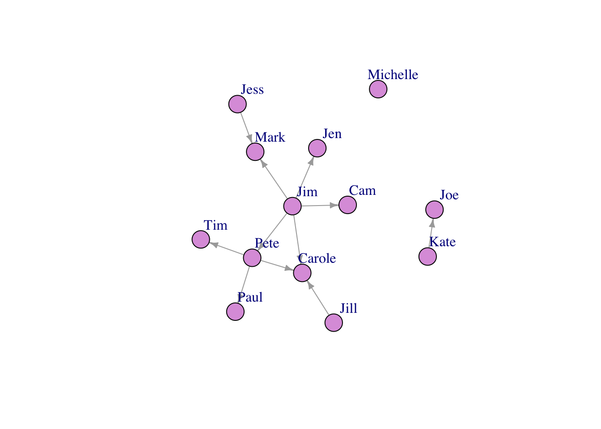
Layout2 <- layout_as_star(FarmNetwork)
plot(FarmNetwork, edge.arrow.size = .5, vertex.label.dist = 2.5, layout = Layout2)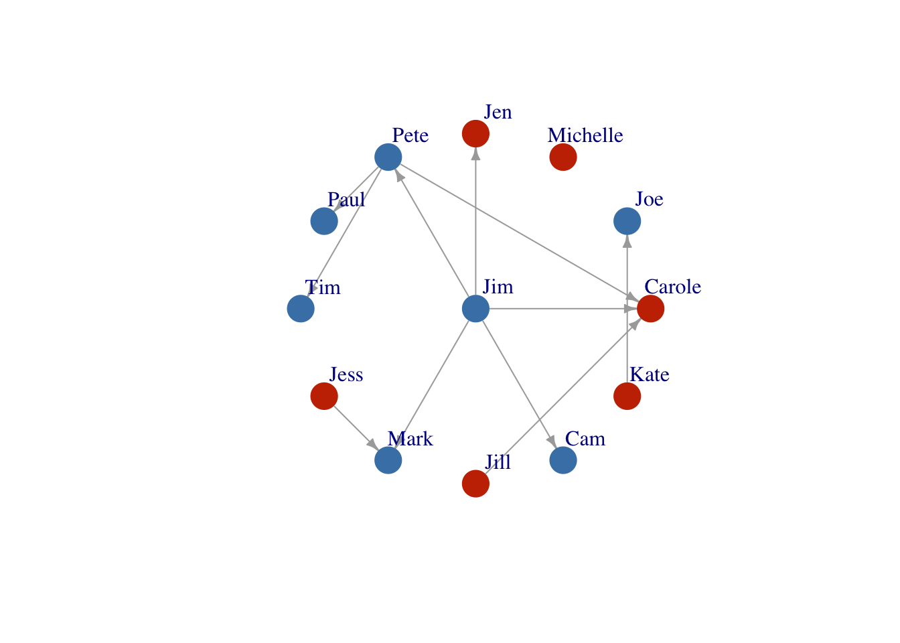
Layout based on the Kamada-Kawai layout algorithm which places the nodes on a plan based on a physical model of springs.
Layout3 <- layout_with_kk(FarmNetwork)
plot(FarmNetwork, edge.arrow.size = .5, vertex.label.dist = 2.5, layout = Layout3)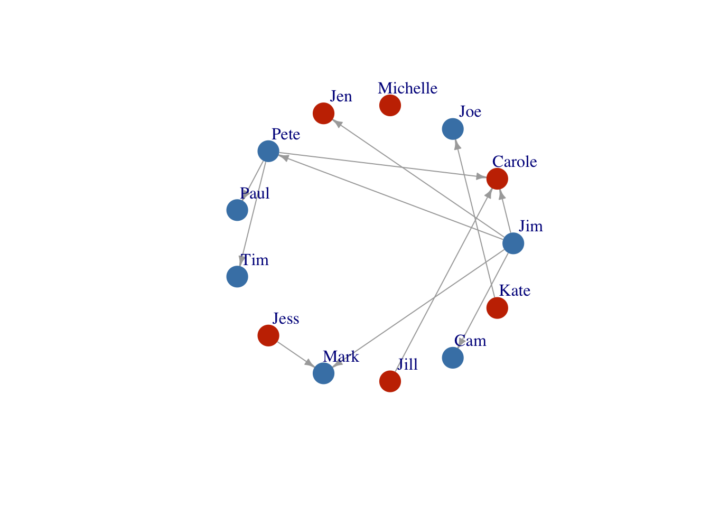
Layout4<- layout_with_fr(FarmNetwork)
plot(FarmNetwork, edge.arrow.size = .5, vertex.label.dist = 2.5, layout = Layout4)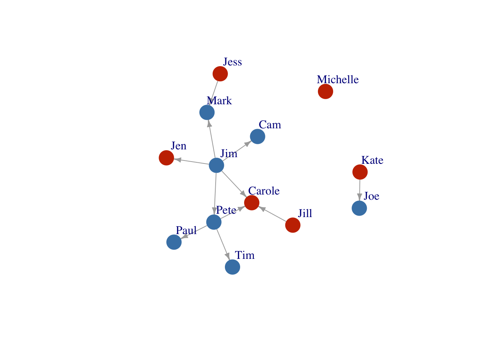
You can also size your nodes based on attributes:
V(FarmNetwork)$size <- V(FarmNetwork)$YearsFarming # size the nodes by number of years farming
plot(FarmNetwork, edge.arrow.size = .5, vertex.label.dist = 2.5)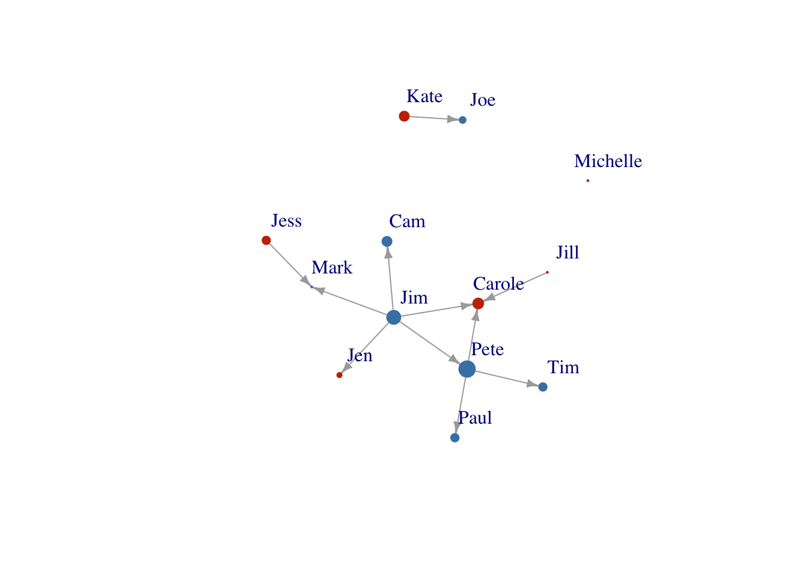
Node size
Scale the node size up a bit..
V(FarmNetwork)$size <- V(FarmNetwork)$YearsFarming *2 ## scale by multiplying by 2
plot(FarmNetwork, edge.arrow.size = .5, vertex.label.dist = 2.5)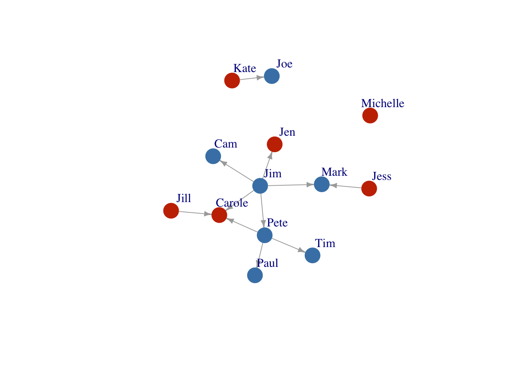
We can also adjust the size of the links. Here we will size them based on the number of times any two farmers communicated.
Link size
E(FarmNetwork)$width <- E(FarmNetwork)$Times/1.5
plot(FarmNetwork, edge.arrow.size = .7, vertex.label.dist = 2.5, edge.curved = .2, layout = Layout2)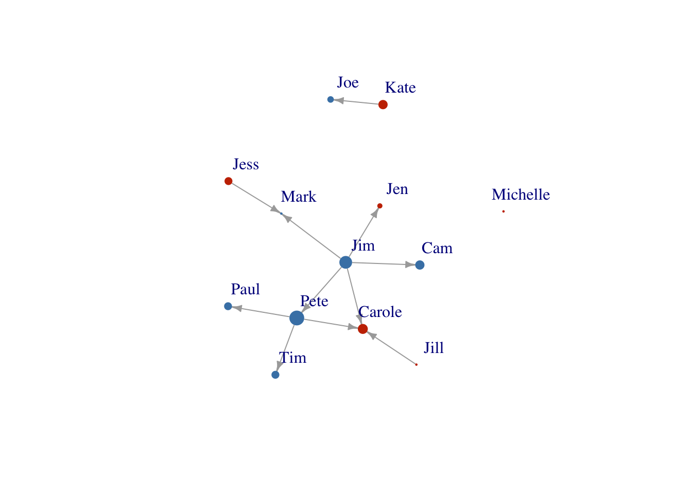
Legends
Finally, let’s add a legend so we understand what our colors mean.
plot(FarmNetwork, edge.arrow.size = .7, vertex.label.dist = 2.5, edge.curved = .2, layout = Layout1)
legend(x=-1.5, y=-1.1, c("Male","Female"), pch=21, pt.bg=c("#4682B4", "#C83200"), pt.cex=2, cex=.8, bty="n", ncol=1)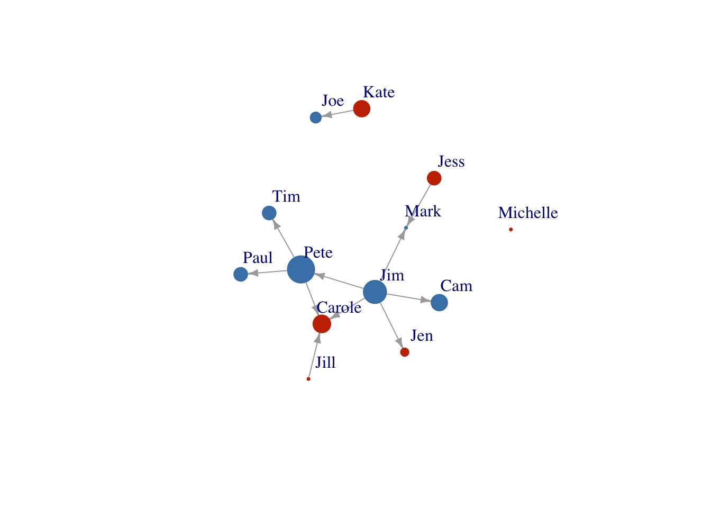
Saving
We can save our networks in a similar was as our ggplots, using ggsave. The only change that we need to make is to “wrap” ggsave around our final network.